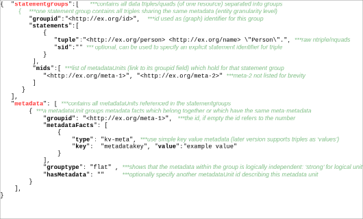

ACM Subject Categories Information systems, Data provenance Information systems, Resource Description Framework (RDF) Information systems, Data exchange
Keywords
RDF
SPARQL
metadata representation
reification
provenance
Abstract
The maintenance and use of metadata, such as provenance and time-related information (when was a data entity created or retrieved), is of increasing importance in the Semantic Web, especially for Big Data applications, that work on heterogeneous data from multiple sources and which require high data quality. In an RDF dataset it is possible to store metadata alongside the actual RDF data and several possible Metadata Representation Models (e.g. Singleton Property and n-ary relation) have been proposed. However, studies investigating the performance of these models show that choosing the appropriate metadata representation depends on the used data and metadata, queries and RDF store. To allow a flexible storage and querying of data and its metadata independent of the applied Metadata Representation Model, we propose MaSQue (Metadata Storage and Querying). The approach introduces an intermediate (meta)data serialization format and query annotations as metadata layer on top of RDF and SPARQL.
Introduction
Within the Smart Data Web project1 data about persons, locations, companies and their products is fetched from many different sources (government files, industry databases, websites and social network texts) to extract, transform, integrate and aggregate the information to represent it in one open industry knowledge graph. The involved tools generate a variety of metadata in every step of the data processing pipeline. Such metadata (e.g. the name of the source the fact has been found in, the retrieval date and license of that source, the version number of the (recognition) tool, which has been used etc.) describes how a fact or piece of information has been derived.
The storage of such metadata alongside the data in the same RDF store allows to record fine-grained traceability and provenance information, license and access rights, data trustworthiness and confidence scores for every single fact in the knowledge graph. Detailed metadata increases data quality and supports subsequent data processing steps. Resolving conflicting data values (like the number of employees) for a company found in different sources, can be improved by metadata-based heuristics, e.g. prefer newer facts or prefer values from a source, which is known to ensure high data quality.
Besides the RDF Reification Vocabulary2 other Metadata Representation Models (MRMs) have been presented. Figure 1 illustrates the MRMs considered in this work. Comparing the performance of these models was subject of a few evaluations [2],[4],[5],[6]. However, the performance results of the MRMs differ significantly between the evaluation scenarios and can be influenced by use case specific parameters like characteristics of data and metadata, complexity of the queries and the used RDF store [1],[4]. Thus it is challenging to determine the best MRM for a scenario beforehand. To enable the development of an RDF application extensively using metadata, but without restricting it a-priori to one concrete implementation of an MRM, we propose MaSQue (Metadata Storage and Querying). MaSQue serves as an abstraction layer for different MRMs covering both the storage and serialization of RDF (meta)data as well as querying RDF stores using SPARQL.
Figure 1. Structure of different Metadata Representation Models: Six different ways of describing (or reifying) an RDF triple s, p, owith a metadata keyand valuepair are supported by MaSQue; Companion property (cpprop), nary relation (nary), named graphs (ngraphs), singleton properties (sgprop), standard reification (stdreif), and the Blazegraph-specific Reification Done Right (rdr). Besides rdr, which is based on the vendor-independent RDF* and SPARQL* [3], all approaches use an explicit statement identifier (red), which is used to attach metadata (green) to the data (grey). Cpprop and stdreif are based on additional triple handlers (white). Properties which also occur as subject in another triple are drawn with dashed lines.
Metadata levels and Metadata Representation Models
As Metadata Representation Model (MRM), we define a strategy of splitting an RDF statement or triple t and its set of key-value based metadata facts m into several triples or quads, such that we can store and query metadata - for all statements individually - in an RDF Store. The MRMs supported by MaSQue are displayed and briefly discussed in Figure 1. For a detailed explanation we refer to [4] and [1] (cpprop and rdr). As metadata we understand the aforementioned detailed, descriptive information (confidence, provenance, validity scope, traceability information, license etc.) for an individual triple or a small subset of triples from the knowledge graph. Meta-metadata is characterized by one or more nested layers of metadata, which describe metadata itself.
Metadata granularity levels, factorization and grouping
Metadata can be recorded for individual triples or sets of triples. In the context of MaSQue we distinguish between three granularity levels. Metadata ongraph-levelprovides information for all entities and statements within the same named graph. It is typically applied to store provenance for several or all entities/triples of an entire dataset. The entity/resource-level is the level where all statements with the same subject (entity identifier) share meta information. The most fine-grained metadata is on triple-level, where metadata is kept for each statement or triple (classic reification scenario). As factorizationwe denote the feature of cpprop and ngraphs to store shared metadata (on various granularity levels) only once. This is realized by using the same statement identifier for all statements sharing the same metadata. The remainder MRMs are not capable of this technique since they rely on the identifier to reconstruct the actual data triple or, in the case of rdr, do not use an id. Within MaSQue we use a workaround. Instead of connecting the metadata to every statement, the metadata will be linked to a new shared resource, and only the link from the statements to that resource will be stored redundantly. Another requirement towards metadata storage (especially in the Wikidata use case from [4]) is the creation of metadata fact groups or logical units. To give an example: If a fact was retrieved from two sources with two different confidence scores, the source and score form a logical unit. The confidence score does only make sense in the scope of the source.
MaSQue Approach
MaSQue is a Java-based framework and command line utility. Its paradigm is to hide the complexity and individual characteristics of various MRMs behind a uniform mask. The usage of MaSQue in a scenario, in which storage and retrieval of extensive and fine grained RDF metadata is crucial, allows to switch between different MRMs without rewriting the application logic. It consists of 2 major components meta-RDF and meta-SPARQL, which establish an abstraction layer for RDF data and its metadata for storage & serialization and querying respectively. The software architecture enables extensions for other MRMs (besides the supported ones from Figure 1).
Meta-RDF
Meta-RDF3 had been designed to convert datasets into various MRMs. The component features a novel JSON representation, which allows the association of metadata to quad(s) for different levels of granularity. Moreover it supports meta-metadata. Once the source dataset is converted into the JSON representation, this intermediate format can be used to create NQuads files for the various MRMs. The JSON representation is optimized for a parallel conversion of huge datasets, which do not fit into main memory. Meta-RDF supports different serialization and optimization schemes4 (factorization for all MRMs, combination of ngraphs with other MRMs for efficient meta-metadata representation, logical metadata groups etc.) for the MRMs. While the JSON format is intended for a batch conversion of a complete dataset, applications can also use the integrated Java data model abstraction (DAO) to convert RDF metadata on-the-fly. The data model is described in Figure 2. The model was introduced to explicitly represent different aspects of metadata storage which can be leveraged by different MRMs. It allows among others to express different granularity and share levels, an easy way of nesting metadata and the definition of logical metadata groups.

Figure 2. Excerpt from meta-RDF JSON data model
Meta-SPARQL
In order to enable MRM-independent SPARQL queries, the generic and extensible tool meta-SPARQL5 has been developed. It allows automatic rewriting of SPARQL queries for different MRMs. The idea is, to replace every triple pattern within a SPARQL query by a set of special annotations, which will be translated by meta-SPARQL into the appropriate format. Every query needs to be written as a template in an intermediate SPARQL dialect based on these annotations. It consists of 4 annotations explained in Table 1. The template can be converted into query instances of the various MRMs. Therefore query templates can be written independent of granularity support and other MRM-specific characteristics. The semantics of every annotation is further illustrated by a set of examples online6. Meta-SPARQL features a file format to convert several query templates at once, which can be used for MRM benchmarking purposes, but also exposes functions for the conversion of single queries or annotations.
Annotation
Description
#!data(?s,?p,?o)!#
replacing a regular data triple pattern (for regular data queries)
#!reif(?id,?s,?p,?o)!#
analogous to #!data but retrieving statement id as well
#meta(?id,?k,?v)!#
retrieve metadata key and value, using a statement id
#meta2(?id,?k,?v)!#
retrieve metadata key and value, which is reified itself (due to meta-metadata), using a statement id
Table 1. Meta-SPARQL query translation annotation types. Every annotation type corresponds to a function in the meta-SPARQL tool, which expects one or more parameters. The parameters can be SPARQL variables or RDF names (IRI, literal).
Conclusions and Future Work
To the best of our knowledge we proposed the first generic approach, which allows the conversion and querying of RDF data(sets) with metadata and meta-metadata while retaining the flexibility to exchange the underlying MRMs and featuring multiple granularity levels. We applied MaSQue in two usage scenarios (a DBpedia-based company dataset with revision metadata on entity-level7 and an artists knowledge8 graph with provenance on triple-level. However these scenarios where read-only and did not consider SPARUL queries, which need to be studied in the future. Furthermore a user, which wants to use the SPARQL endpoint UI (containing data and metadata), still needs to know the details of the used MRM. To address this issue, we could think of extending and utilizing MaSQue as a SPARQL proxy. To go one step further, a more sophisticated metadata-aware system could be developed, which allows unified querying, regardless the used MRMs, granularity levels and metadata levels. To improve the support of meta-SPARQL query templates by SPARQL APIs, the definition of a mapping from ngraphs’ intuitive and standard compliant queries to meta-SPARQL’s annotations using designated (magic) properties could be investigated.
Acknowledgements
This work was supported by grants from the Federal Ministry for Economic Affairs and Energy of Germany (BMWi) for the Smart Data Web project (GA-01MD15010B)9, as well as from the European Union for the Horizon 2020 project ALIGNED (GA-644055)10. MaSQue has been developed in the Master's thesis of the first author. Special thanks go to Kay Müller, who supervised and mentored that thesis.
Fu, G., Bolton, E., Queralt-Rosinach, N., Furlong, L. I., Nguyen, V., Sheth, A. P., Bodenreider, O., and Dumontier, M. Exposing provenance metadata using different RDF models. In Proceedings of 8th SWAT4LS Conference. (2015), pp. 167–176.
Hartig, O. Foundations of RDF* and SPARQL* (An Alternative Approach to Statement-Level Metadata in RDF). In 11th Alberto Mendelzon Workshop on Foundations of Data Management (2017).
Hernández, D., Hogan, A., Riveros, C., Rojas, C., and Zerega, E. Querying wikidata: Comparing sparql, relational and graph databases. In ISWC 2016 Proceedings, Part II (2016), pp. 88–103.
Hernández, D., Hogan, A., and Krötzsch, M. Reifying rdf: What works well with wikidata? In SSWS@ISWC (2015), vol. 1457 of CEUR Workshop Proceedings, CEUR-WS.org, pp. 32–47.
Nguyen, V., Bodenreider, O., and Sheth, A. P. Don’t like rdf reification?: making statements about statements using singleton property. In WWW (2014), ACM, pp. 759–770.
![Structure of different Metadata Representation Models: Six different ways of describing (or reifying) an RDF triple s, p, o with a metadata key and value pair are supported by MaSQue; Companion property (cpprop), nary relation (nary), named graphs (ngraphs), singleton properties (sgprop), standard reification (stdreif), and the Blazegraph-specific Reification Done Right (rdr). Besides rdr, which is based on the vendor-independent RDF* and SPARQL* 3, all approaches use an explicit statement identifier (red), which is used to attach metadata (green) to the data (grey). Cpprop and stdreif are based on additional triple handlers (white). Properties which also occur as subject in another triple are drawn with dashed lines.](img/100002010000078C0000019E15958F2D1E8C2850.png)